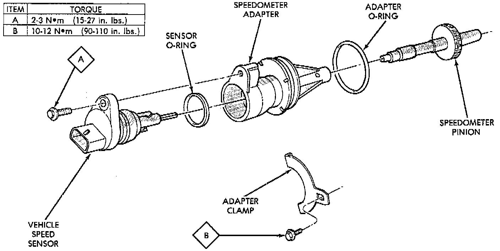
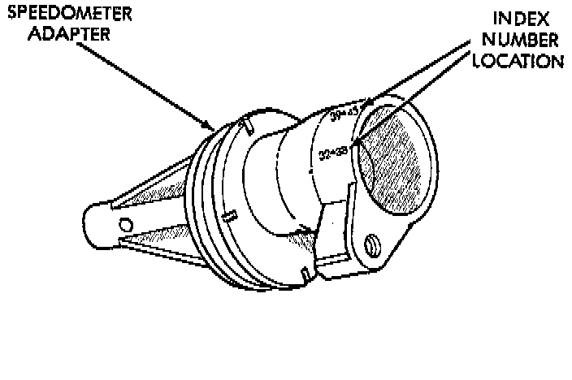

Speedometer Gear: Service and Repair
REMOVAL1. Raise vehicle.
2. Disconnect wires from vehicle speed sensor.
3. Remove adapter clamp and screw.
4. Remove speed sensor and speedometer adapter as an assembly.
5. Remove speed sensor retaining screw and remove sensor from adapter.
6. Remove speedometer pinion from adapter. Replace pinion if chipped, cracked, or worn.

7. Inspect sensor and adapter O-rings. Remove and discard O-rings if worn or damaged.
8. Inspect terminal pins in speed sensor. Clean pins with MOPAR electrical spray cleaner if dirty or oxidized. Replace sensor if faulty, or if pins are loose, severely corroded, or damaged.
INSTALLATION AND INDEXING
1. Thoroughly clean adapter flange and adapter mounting surface in housing. Surfaces must be clean for proper adapter alignment and speedometer operation.
2. Install new O-rings on speed sensor and speedometer adapter, if necessary.
3. Lubricate sensor and adapter O-rings with transmission fluid.
4. Install vehicle speed sensor in speedometer adapter. Tighten sensor attaching screw to 2 - 3 Nm (15 - 27 inch lbs.) torque.
5. Install speedometer pinion in adapter.
6. Count number of teeth on speedometer pinion. Do this before installing assembly in housing. Then lubricate pinion teeth with transmission fluid.

7. Note index numbers on adapter body. These numbers will correspond to number of teeth on pinion.
8. Install speedometer assembly in housing.
9. Rotate adapter until required range numbers are at 6 O-clock position. Be sure range index numbers correspond to number of teeth on pinion gear.
10. Install speedometer adapter clamp and retaining screw. Tighten clamp screw to 10 - 12 Nm (90 - 110 inch lbs.) torque.
11. Connect wires to vehicle speed sensor.
12. Lower vehicle and top off transmission fluid level if necessary.